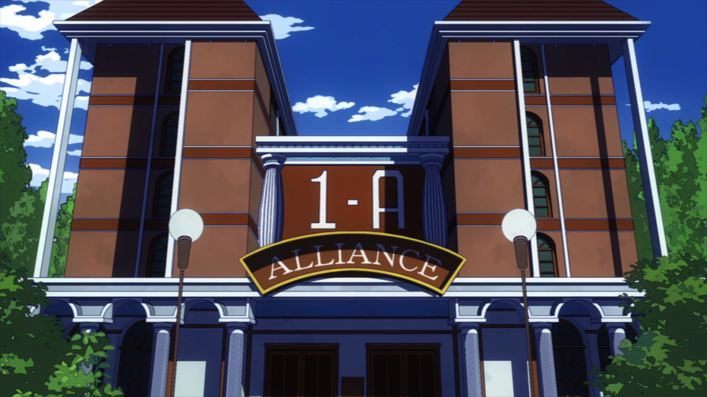

A High School promises a dynamic and enriching student life, characterized by a unique blend of rigorous
hero
training, camaraderie, and personal growth. Here is a bit insight into the vibrant student life at UA:
Comprehensive Hero Training:
UA High School is renowned for its state-of-the-art training facilities and cutting-edge curriculum
designed to
nurture the next generation of heroes.
Students engage in practical exercises, combat simulations, and real-world scenarios to develop their Quirks
and
enhance their hero skills.
Diverse Quirk Abilities:
One of the most exciting aspects of student life at UA is the incredible diversity of Quirks among the
student
body. Interacting with peers who possess a wide range of unique abilities fosters an environment of mutual
learning and collaboration. Occasionally sparing against their peers to gain experience and knowledge about
encountering different quirks.
Mentorship from Pro Heroes:
Students have the privilege of being mentored by experienced Pro Heroes who serve as faculty members. This
mentorship provides invaluable insights, guidance, and real-world perspectives, ensuring students are
well-prepared for the challenges of heroism.
Camaraderie and Teamwork:
UA High School places a strong emphasis on teamwork and collaboration. Students form close bonds with
their
classmates, learning to trust and rely on each other during training exercises and hero missions.
The supportive community at UA fosters a sense of camaraderie and friendship that lasts beyond the school
years.
Personal Growth and Development:
Beyond hero training, UA is committed to the holistic development of its students. The rigorous academic
curriculum, coupled with extracurricular activities, encourages personal growth and the cultivation of
essential
life skills.
Students are encouraged to explore their interests, discover their strengths, and develop a strong sense of
responsibility and integrity.
Excitement of School Events:
UA High School hosts exciting and high-stakes events, such as the Sports Festival, where students showcase
their
abilities in friendly competition. These events not only serve as a platform for skill demonstration but also
add
an element of excitement to student life.
In summary, student life at UA High School is a thrilling and transformative experience. The combination
of
top-tier hero training, diverse Quirk abilities, mentorship from Pro Heroes, camaraderie, personal growth
opportunities, and exciting school events makes UA a premier institution for aspiring heroes. Joining UA
means
embarking on a journey that goes beyond education—it's a pathway to becoming a hero of unparalleled caliber.

The dormitory system at UA High School is a crucial aspect of the holistic educational experience we offer to
our aspiring heroes.
Community Building:
The dorms serve as a hub for fostering a sense of community among our students. Living together allows students
to build strong bonds, form lasting friendships, and create a supportive environment that extends beyond the
classroom.
Enhanced Collaboration:
Living in close quarters encourages collaboration and teamwork among students. This is a vital aspect of hero
work, where effective communication and cooperation are key to success.
24/7 Accessibility to Facilities:
The dorms provide students with convenient access to UA's top-notch training facilities at any time. This allows
for additional practice, skill development, and strategic planning outside of regular class hours.
Security and Safety:
The dormitory system enhances the overall safety and security of our students. With the presence of faculty and
security measures, we ensure a protected environment where students can focus on their studies and training
without unnecessary distractions.
The security of UA competes with Japan's strongest prison, Tartarus, and can withstand any form of attacks and
protect their students from the dangers of villains seeking to end the next generation of Heroes.
Holistic Development:
Living in the dorms promotes holistic development by encouraging students to take responsibility for their daily
routines, self-care, and interactions with peers. These life skills contribute to their growth not just as
heroes but as well-rounded individuals.
Efficient Learning Environment:
The dorms are designed to create an efficient and focused learning environment. Students can collaborate on
projects, engage in group study sessions, and immerse themselves in the hero lifestyle, fostering a sense of
dedication and discipline.
Support System:
The dormitory system provides students with a built-in support system. They can seek guidance from faculty,
connect with peers facing similar challenges, and navigate the complexities of hero training with the
encouragement of their fellow dorm residents.
Teachers are always available to help with every individual student and their needs. These teachers are also
professional heroes and have beyond normal capabilities of normal high school teachers.
In summary, the dormitory system at UA High School is an integral part of our commitment to nurturing
well-rounded and resilient heroes. It goes beyond accommodation, creating an immersive and supportive living
environment that complements the academic and practical aspects of hero education. Joining the UA’s dormitory
community ensures that students have the resources, security, and camaraderie needed to thrive in their journey
toward becoming exceptional heroes.
Here is a video of class1-A moving into their dorms!